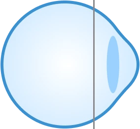
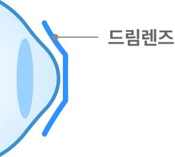
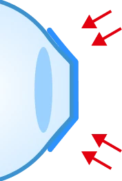
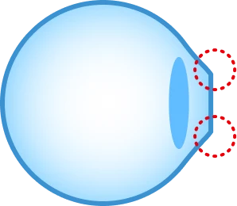
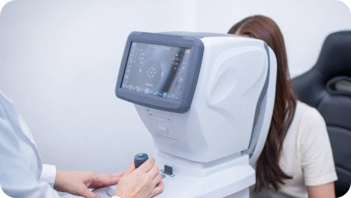
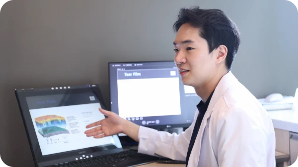
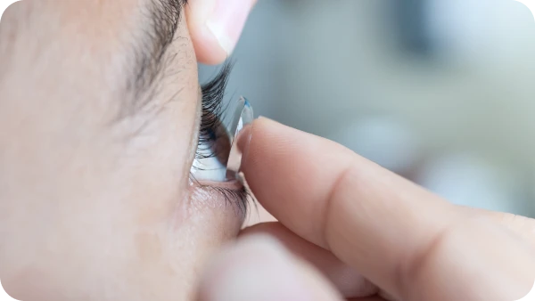
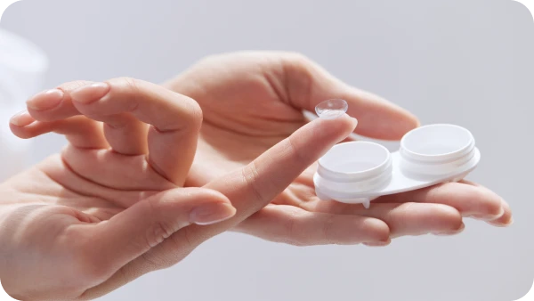

드림렌즈란?
드림렌즈는 아동·청소년기의 대표적인 비수술 시력 교정 방법입니다. 시력교정 수술이 어려운 성인에게도 처방이 가능하며, 근시와 난시를 교정하는 특수 콘택트렌즈입니다. 잠자는 동안 착용하여 각막 중심의 형태를 변화시켜 일시적으로 시력을 교정하는 방식입니다.
낮 시간 안경 없는 자유로움과 성장기 근시 진행 억제 효과를 동시에! 실력과 경험을 갖춘 아이리움 안과전문의가 체계적인 맞춤 드림렌즈 프로그램을 선사합니다.
수술적 시력교정을 할 수 없는 아동 청소년기에 안경 없이 시력교정 효과가 가능합니다.
잠자는 시간을 이용해 시력을 교정하고 아침에 렌즈를 제거합니다. 활동하는 낮 시간대 렌즈로 인한 제약이 없습니다.
성장기 아동 청소년기 근시 억제 효과가 약 45%로 보고되고 있습니다.

Reference Orthokeratology to control myopia progression: a meta-analysis. PLoS One. 2015.
드림렌즈는 아동·청소년기의 대표적인 비수술 시력 교정 방법입니다. 시력교정 수술이 어려운 성인에게도 처방이 가능하며, 근시와 난시를 교정하는 특수 콘택트렌즈입니다. 잠자는 동안 착용하여 각막 중심의 형태를 변화시켜 일시적으로 시력을 교정하는 방식입니다.

Step

Step

Step

Step

드림렌즈를 이용한 어린이와 청소년 시력교정도 체계적인 검사와 1:1 맞춤 시력 교정 노하우가 있는 시력교정 클리닉, 아이리움이 잘합니다. 가족의 소중한 시력, 실력과 경험을 갖춘 아이리움 안과전문의를 만나세요.
Step
정밀 시력검사

Step
안과전문의 진료

Step
드림렌즈 피팅

Step
드림렌즈 수령

드림렌즈,
이런 분께 추천합니다.
근시·난시가 있는
어린이와 청소년
안경 착용에 불편함을 느끼는 어린이와 청소년
시력 교정과 근시 진행 억제 효과를동시에 원하는 경우
모든 시력교정 수술이 부적합하다는진단을 받은 성인
드림렌즈에 대해 가장 많이 묻는 질문
드림렌즈의 시력교정 효과 얼마나 지속되나요?
드림렌즈가 적합한 나이가 있나요?
드림렌즈를 착용해도 성인이 되면 시력교정술 가능한가요?
렌즈 착용하고 자다가 눈 비벼서 렌즈가 빠졌어요.
드림렌즈 주의사항은 무엇인가요?